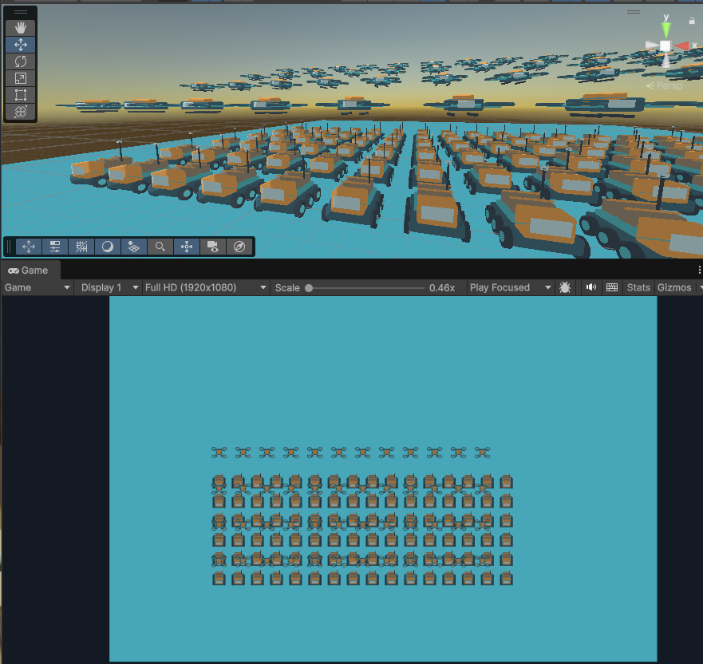
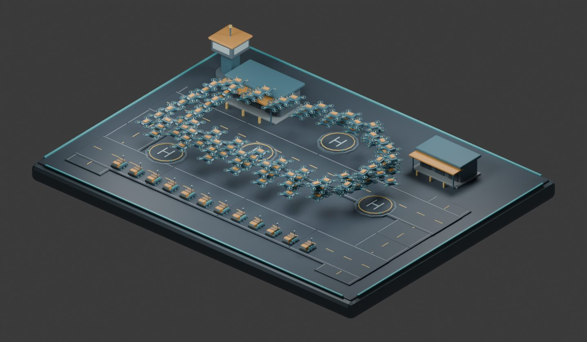
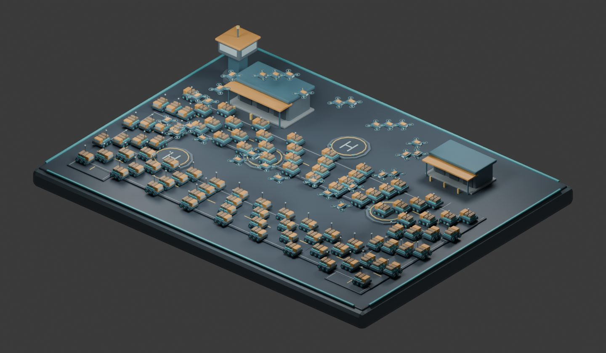
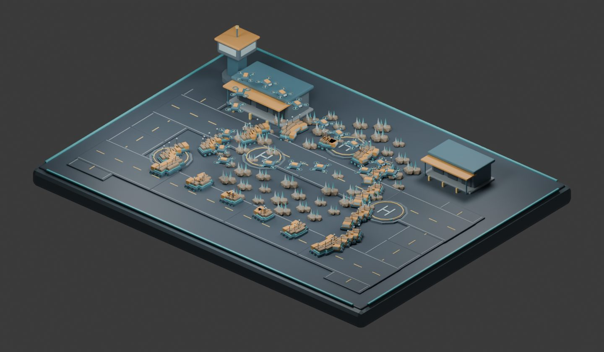

Tracefolio REPORTS & ISSUES
Tracefolio REPORTS & ISSUESEntity Forge 예제를 운송 시뮬레이션과 편집 가능한 HUD로 재구성
검증 대기드론 배송·화물 운송·광석 회수 3개 예제에 경로 이동, 계약 목표와 HUD를 구현했습니다. 컴파일·시뮬레이션·소스 검사는 통과했으며 Unity 화면·새 개선율 측정은 보류입니다.
작업 결과
모델 격자만 배치하던 씬을 서로 다른 운송 시뮬레이션으로 교체했습니다. 이동 개체는 120·126·82개이며 반복 계약 목표는 60·80·100단위입니다. 일시정지, 0.5/1/2배속, 계약 재시작, 대조 플레이어 측정 버튼을 연결했습니다. 게임 루프·UI 구현 완료와 네이티브 실행 검증 상태를 구분합니다.
변경 내용
적용 내용
Pixel Camera의 편집 가능한 Canvas와 Inspector 이벤트 구조를 확인해 재사용했습니다. HUD는 씬/프리팹의 편집 가능한 오브젝트와 지속 이벤트로 작성했으며 Runtime에서 UI를 생성하지 않습니다. 개체 수, 현재 FPS와 프레임 시간, 계약 진행 막대, 완료 계약 수, 실행 모드와 예상 빌드 프레임 시간 감소율을 표시합니다. 퍼센트는 현재 씬·소스·환경에 일치하는 대조 플레이어 근거만 사용하고 없으면 측정 전으로 표시합니다. 측정 버튼은 에디터 Play 종료 후 기존 비교 빌더를 사용합니다.
Blender 5.2.3 LTS에서 착륙장·창고·관제탑·도로·받침 지형 5종을 실제 모델링하고 편집 원본 EntityForgeDepotKit.blend를 보관했습니다. 평면 격자 배치를 산업 지형과 운송 경로로 바꾸고, 경로 구간 길이에 따른 이동으로 짧은 구간의 밀집을 줄였습니다. 광석 씬의 Rigidbody 8개와 바닥 충돌도 유지했습니다.

위는 사용자 제공 원본입니다. 아래 3개는 새 씬의 모델 배치를 실제 Blender에서 렌더링한 참고 이미지이며 Unity 게임/HUD 화면이 아닙니다. 수정 후 Unity 캡처를 대신하는 실행 검증으로 취급하지 않습니다.



검증
실제 Unity 설치본 Roslyn/참조로 공통 템플릿·Runtime·DOTS·Editor·샘플 Runtime·샘플 Editor·개발 Editor 7개 어셈블리 컴파일 통과. 순수 시뮬레이션 코드를 실제 실행해 600프레임 시간 진행, 일시정지, 배속, 재시작, 경로 웨이포인트·순환, 거리 가중 경로, 운송 회차 계산을 확인했습니다. 3개 씬의 내부 fileID 참조·중복 ID·필수 HUD 연결·버튼 이벤트 4개와 작성된 Canvas를 검사했습니다.
HUD 번역 25개×9언어와 치환 인자 일치를 검사했습니다. 공통 글꼴의 누락을 실제 확인한 뒤 공식 Noto Sans CJK SC와 SIL OFL을 예제에 포함했으며 사용 글자 434개 전부의 cmap 포함을 확인했습니다. 문서 9개와 로컬 링크·파비콘 검사 통과. 최종 파일 방식 패키지 372개 포함 파일과 메타 readback 통과. 상세 검사 JSON
Blender 원본 PNG 약 1.8MB씩을 보존하고 실제 Blender의 JPEG 내보내기로 공개용 이미지를 각각 약 96~110KB로 저장·재검토했습니다. 다른 이미지 편집 도구는 사용하지 않았습니다.
남은 사항
사용자가 컴퓨터를 사용 중이며 포커스를 가져오지 말라고 지시하여 Unity·플레이어 신규 실행, 실제 UI 클릭/Play/언어 전환, Unity shader·font·mesh import 표시, 실제 빌드 변환과 새 성능 퍼센트 측정은 미실행입니다. 네이티브 실행 화면의 전후 비교가 완료됐다고 보고하지 않습니다. 기존 스크린샷 해시는 유지했습니다. 샘플에는 Unity UI가 필요하며 본체는 샘플·UGUI에 의존하지 않습니다. 현재 예제 입력은 이 프로젝트의 기존 Legacy Input 설정을 사용하며 다른 입력 설정은 별도 검증이 필요합니다. 임의의 속도 향상 퍼센트나 과거 버전의 수치를 새 예제 값으로 사용하지 않았습니다. 교훈 검토: 예제 완성 기준을 플레이 루프·편집 가능한 HUD·측정 설명으로 프로젝트에 반영했으며 전역에는 기존 검증 원칙과 중복 규칙을 추가하지 않았습니다.
작업 시간
- 제안 시간: 20~30분
- 실제로 완료된 시간: 2026-11-02 16:48:08 KST 시작. 17:12:05 KST 구현·비GUI 검사·패키지 생성 완료(23분57초). 공개 배포 확인 별도. 네이티브 Unity 실행 검증 완료 시각은 없음.
- XERJ: 실패 — Xerj.ps1 Status에서 node is not running 확인. rg와 현재 다른 제품 예제·씬·프리팹 소스 대조로 대체.